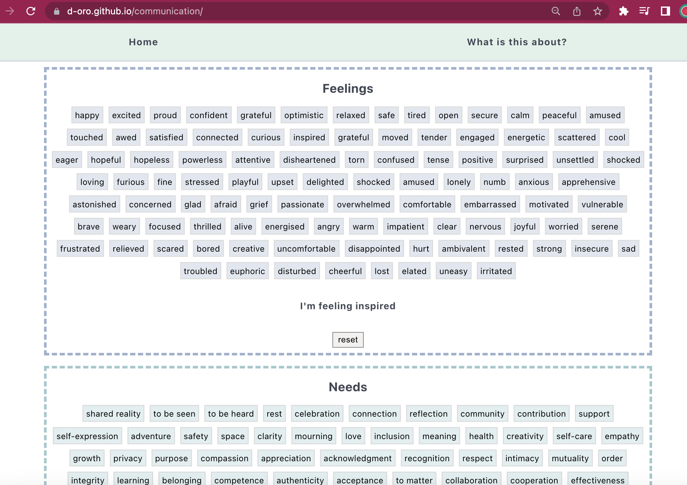
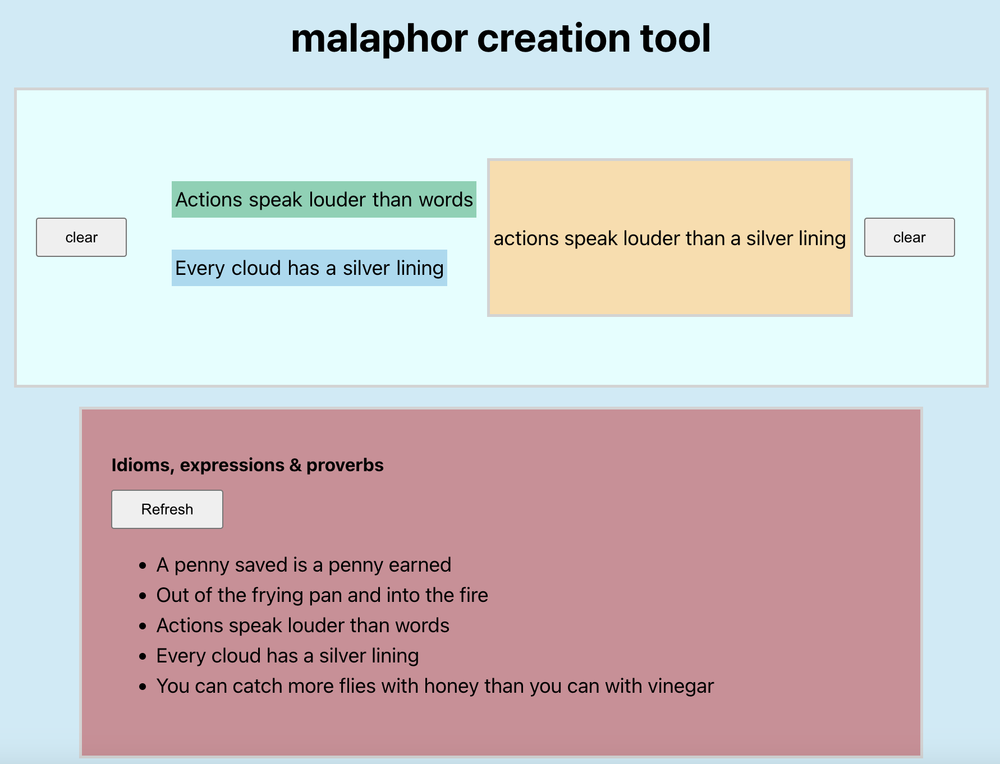
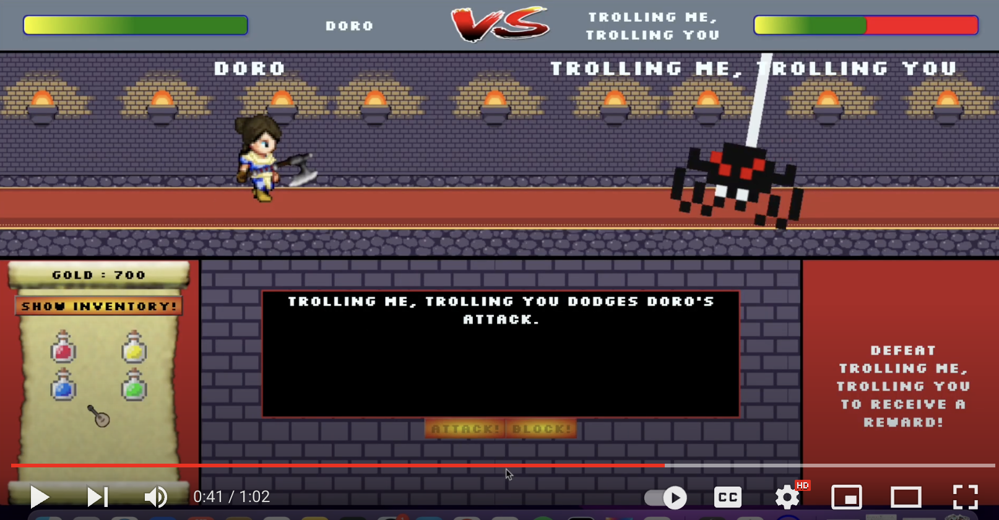
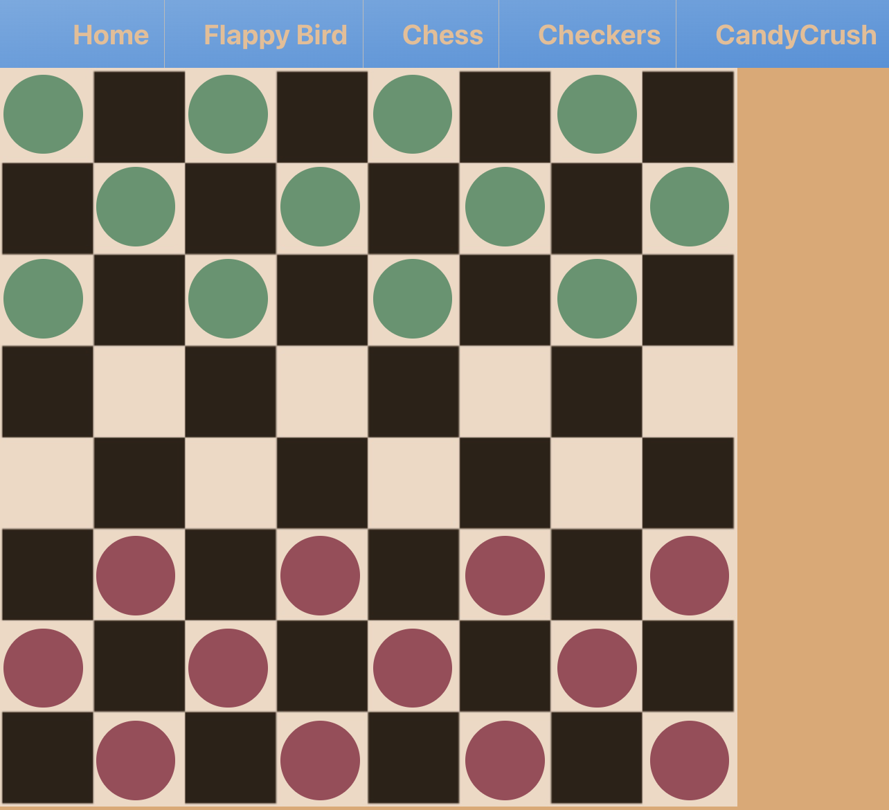
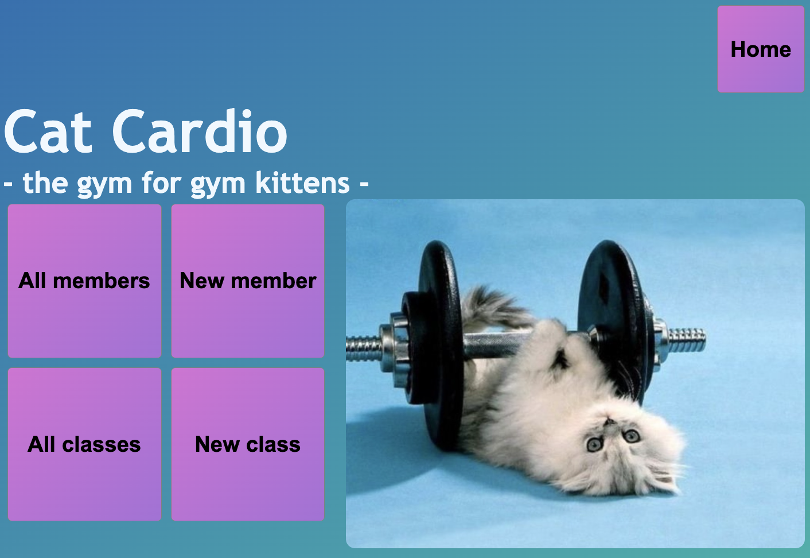

Here are some of the things I worked on during and right after my coding bootcamp.
Perhaps I will update this soon with new projects, presentations and side projects,
but I'll keep it for now to remind myself how far I've come.
Since completing training in Non-Violent Communication I've always
wanted a digital tool to facilitate the practice, and now I have the
coding skills to build it myself, so here's the start of my NVC app.
I plan to continue working on this and
adding more features right now it can be used to identify needs and feelings,
and has a short intro on what NVC is.
Go to my NVC Webpage

Malaphors are fun! They combine two idioms to create a humorouos, absurd phrase.
E.g. 'You can't judge a book by its cover and eat it too.'
I built a malaphor creation tool which gives you a random selection of five out
of a list of 254 idioms and a space to mash the two idioms together
however you wish by clicking on the desired idioms and words.
Go to my Malaphor Generator

For our capstone CodeClan Project, my group and I built an RPG inspired
fullstack adventure Game. We used Java, Spring and PostgreSQL for our
backend and React & JavaScript for our frontend.
Watch Adventure Game Presentation on Youtube

For our group project, my group and I decided to build a gamehub website.
Using JavaScript, React, NPM, Json, html, css and a lot of creativity
we build a fully functioning gamehub website containing chess, checkers,
flappy bird, and candy crush. We started out building a checkers game from
scratch, but towards the end decided to add further games that we developed
while figuring out how to make the checkers pieces move to the correct places.
Gamehub Website Github Repo

My first project! The task was to create a gym membership
management app. To make this more interesting, I decided that
our gym users would be cats.
Using Python, flask, sql, html, css and RESTful routing
I built a full stack gym membership web app that allows the user
to edit and add members and gym classes to their database,
as well as book specific members onto specific gym classes.
An additional feature allows the user to highlight certain classes as
peak time classes that only premium members can attend.
Gym Website Github Repo
